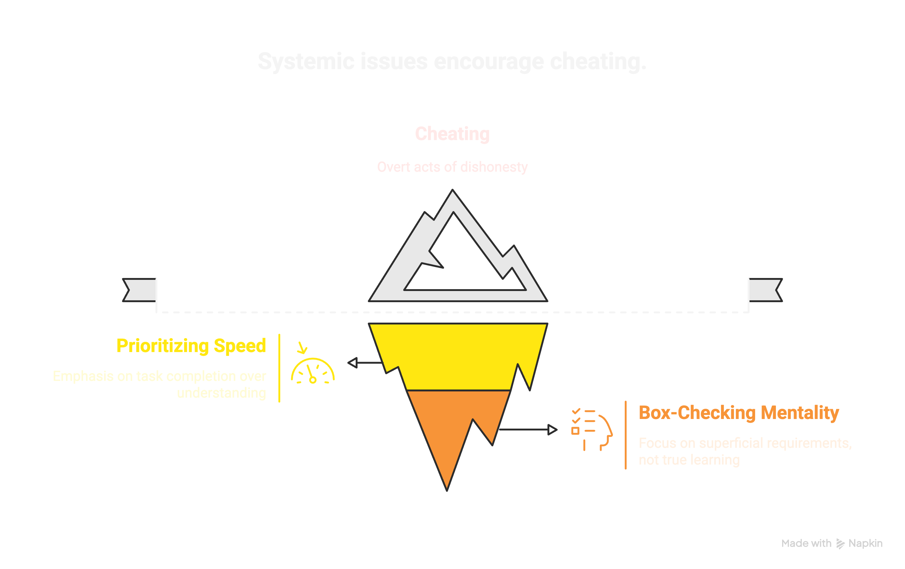
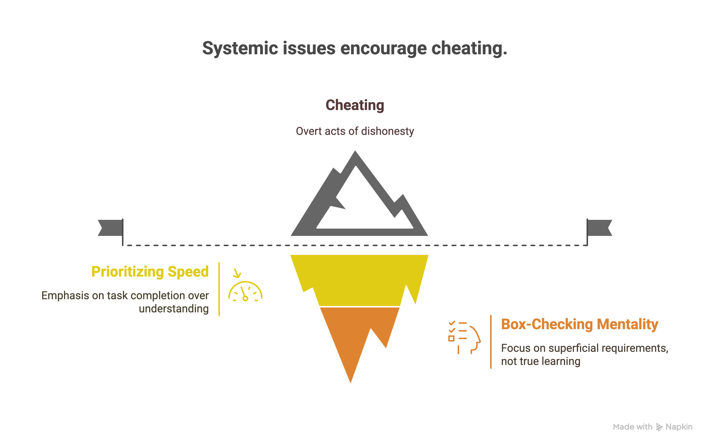
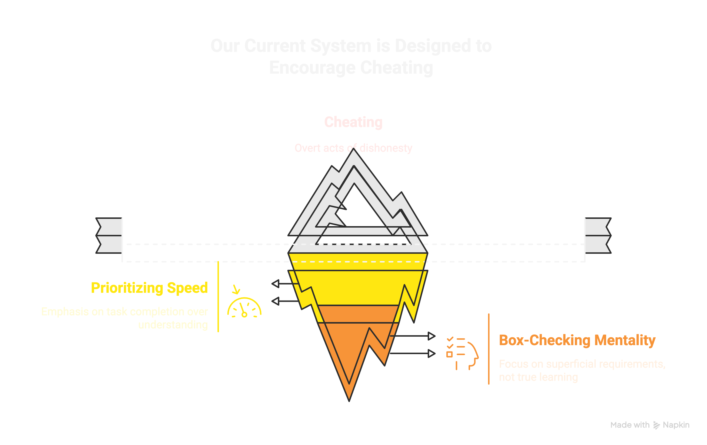
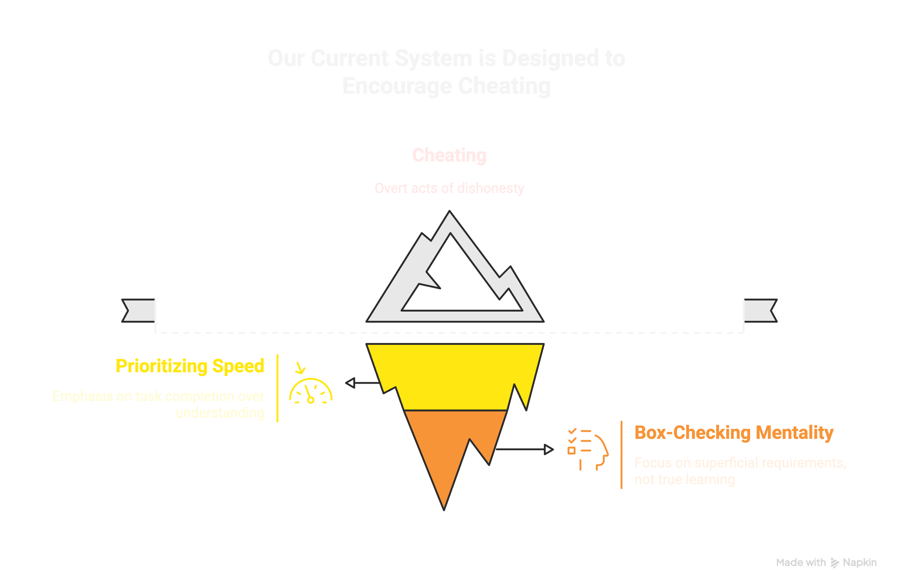
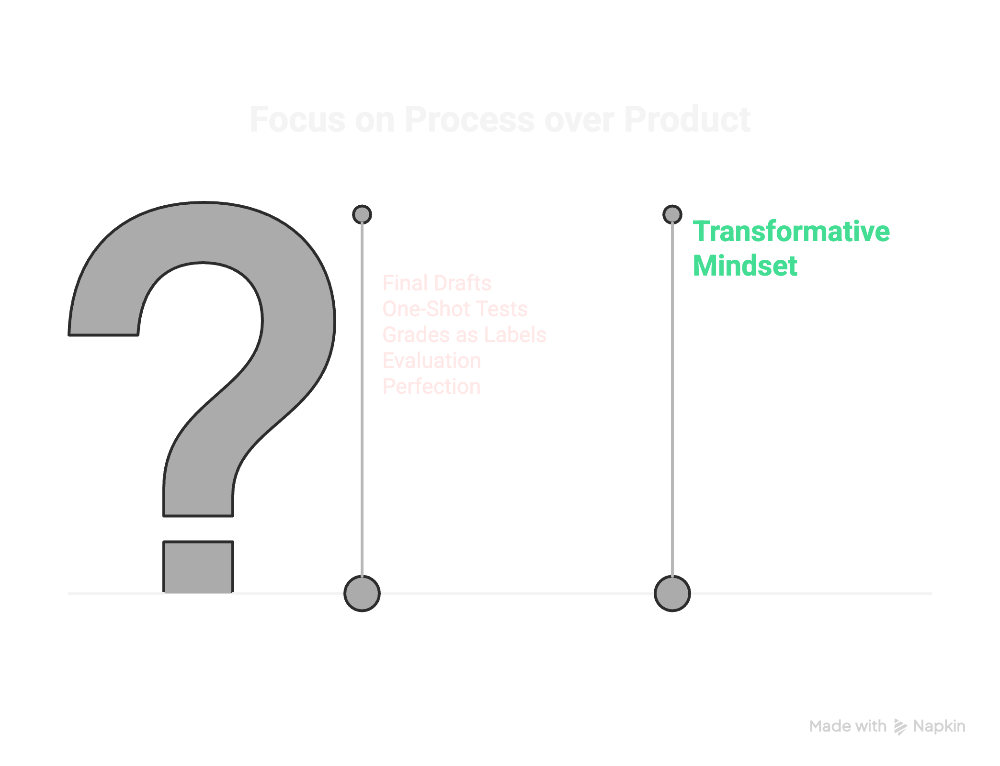

Solve Real Problems
VAESP Lunch and Learn
Artificial Intelligence and the School Leader
VAESP · January 9, 2025
Why you're here
AI is moving fast
What I do
Coaching · Creating · Clarifying
The overwhelm is real
Stop putting out fires
How AI works
Next-best-piece prediction
Wisdom over tools
Ethan Mollick
Don't outsource the learning
Use AI to enhance, not bypass
Solve real problems
Start with empathy
Three uses for school leaders
Data · Communication · Voice
Data
Interrogate without exposing students
Communication
Draft with context, finish with judgment
Voice
AI as a communication companion
Session visuals

Session visuals

Session visuals

Session visuals

Session visuals

Session visuals
